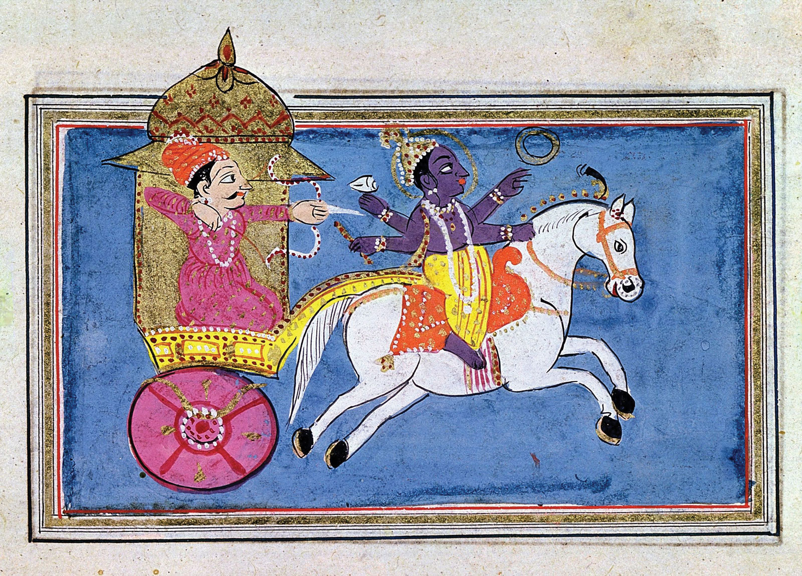

Bhagavadgita, (Sanskrit: “Song of God”) an episode recorded in the great Sanskrit poem of the Hindus, the Mahabharata. It occupies chapters 23 to 40 of Book VI of the Mahabharata and is composed in the form of a dialogue between Prince Arjuna and Krishna, an avatar (incarnation) of the god Vishnu. Composed perhaps in the 1st or 2nd century CE, it is commonly known as the Gita.
On the brink of a great battle between warring branches of the same family, Arjuna is suddenly overwhelmed with misgivings about the justice of killing so many people, some of whom are his friends and relatives, and expresses his qualms to Krishna, his charioteer—a combination bodyguard and court historian. Krishna’s reply expresses the central themes of the Gita. He persuades Arjuna to do his duty as a man born into the class of warriors, which is to fight, and the battle takes place. Krishna’s argument incorporates many of the basic teachings of the Upanishads, speculative texts compiled between 1000 and 600 BCE, as well as of the philosophy of Samkhya Yoga, which stresses a dualism between soul and matter (see mind-body dualism). He argues that one can kill only the body; the soul is immortal and transmigrates into another body at death or, for those who have understood the true teachings, achieves release (moksha) or extinction (nirvana), freedom from the wheel of rebirth. Krishna also resolves the tension between the Vedic injunction to sacrifice and to amass a record of good actions (karma) and the late Upanishadic injunction to meditate and amass knowledge (jnana). The solution he provides is the path of devotion (bhakti). With right understanding, one need not renounce actions but merely the desire (kama) for the fruits of actions, acting without desire (nishkama karma).
| Chapter | Title | Verses |
|---|---|---|
| 1 | Arjuna's Vishada Yoga | 47 |
| 2 | Sankhya Yoga | 72 |
| 3 | Karma Yoga | 43 |
| 4 | Jnana-Karma-Sanyasa Yoga | 42 |
| 5 | Karma-Sanyasa Yoga | 29 |
| 6 | Atma-Samyama Yoga | 47 |
| 7 | Jnana-Vijnana Yoga | 30 |
| 8 | Aksara-ParaBrahma Yoga | 28 |
| 9 | Raja-Vidya-Raja-Guhya Yoga | 34 |
| 10 | Vibhuti Yoga | 42 |
| 11 | Viswarupa-Darsana Yoga | 55 |
| 12 | Bhakti Yoga | 20 |
| 13 | Ksetra-Ksetrajna-Vibhaga Yoga | 34 |
| 14 | Gunatraya-Vibhaga Yoga | 27 |
| 15 | Purushottama Yoga | 20 |
| 16 | Daivasura-Sampad-Vibhaga Yoga | 24 |
| 17 | Shraddhatraya-Vibhaga Yoga | 28 |
| 18 | Moksha-Sanyasa Yoga | 78 | Total | 700 |